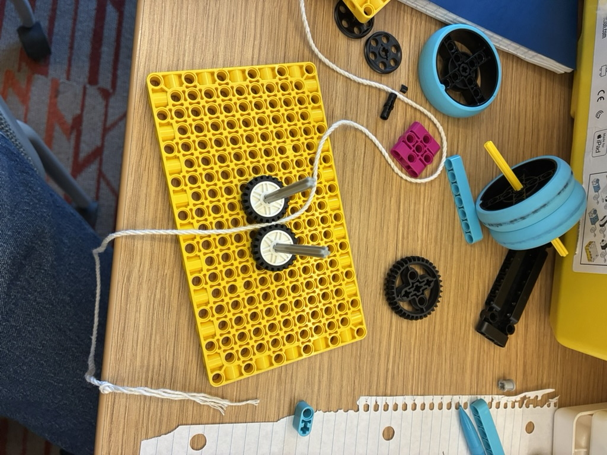
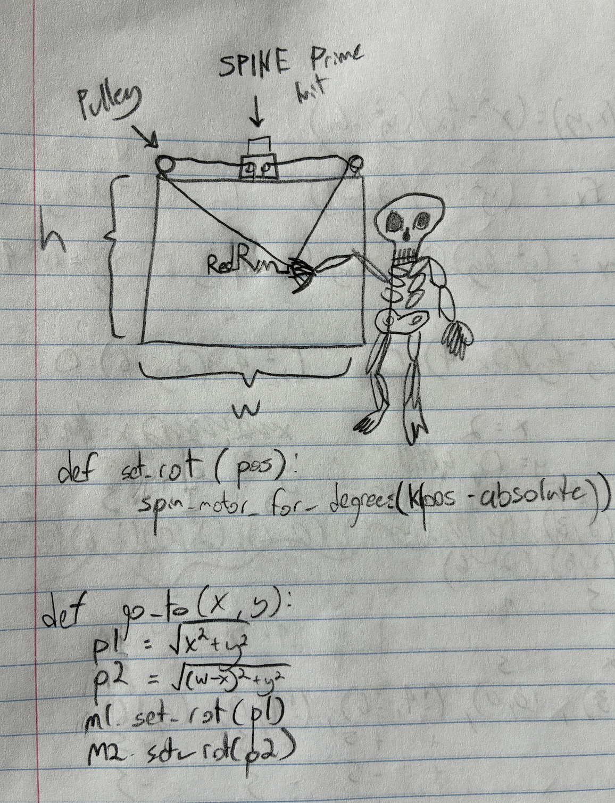

For this activity, we brainstormed ideas and tested different options in prepperation for our haunted house next week. I decided to work on pullies and drops. Me and my teamates are leaning towards building an exhibit that can draw using a couple of pullies linked together. The plan is to have a little skeleton sit up and scream (to scare anyone nearby), then start drawing like an insane person and sit back down.
Below is a diagram of how this will work with some pseudocode for the functions to control the cursor (location of the pen).
